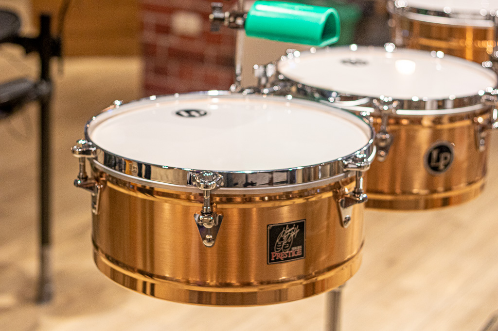

Jean-Baptiste Lully fue el primer compositor de relevancia que incluyó partes orquestales de timbal para su
ópera Teseo en 1675. Pronto lo imitaron otros compositores del siglo XVII. En la música de esta época el timbal
agudo se afinaba en la tonalidad de la composición, y el timbal grave en la dominante. Es interesante notar que
frecuentemente el timbal es tratado como un instrumento de transposición, con la tonalidad indicada al comienzo
de la partitura: por ejemplo Timbal en La-Re.
Luego, ya avanzado el período barroco, Johann Sebastian Bach escribió una cantata secular titulada Tönet, ihr
Pauken! Erschallet, Trompeten! donde los timbales aparecen en primer plano. La pieza comienza con un solo de
timbal y luego coro y timbal recrean la melodía en diferentes combinaciones. Bach usó posteriormente este
material en su oratorio de Navidad Jauchzet, frohlocket!.
Ludwig van Beethoven revolucionó la música de timbal a principios del siglo XIX. No solo escribió para
instrumentos afinados en intervalos distintos de cuartas o quintas, sino que le dio la relevancia de una voz
independiente sobre la base de Tönet, ihr Pauken! Por ejemplo, su Concierto para Violín de 1806 se inicia con
cinco golpes de timbal, y el scherzo de su novena sinfonía (1824) muestra al timbal en un contrapunto con la
orquesta.
El siguiente innovador fue Hector Berlioz, primer compositor en indicar las baquetas exactas a utilizar (madera,
cobertura de fieltro, etc). En muchas de sus obras, por ejemplo su Sinfonía fantástica (1830), requirió la
actuación de varios timbales simultáneos.
Hasta fines del siglo XIX los timbales se afinaron manualmente, es decir, mediante una serie de tornillos
denominados «llaves», que alteraban la tensión del parche al ser girados por el intérprete. Dado que esta
operación era relativamente lenta, los compositores debían prever un tiempo razonable para que se pudiera
cambiar la afinación durante el desarrollo de una obra.